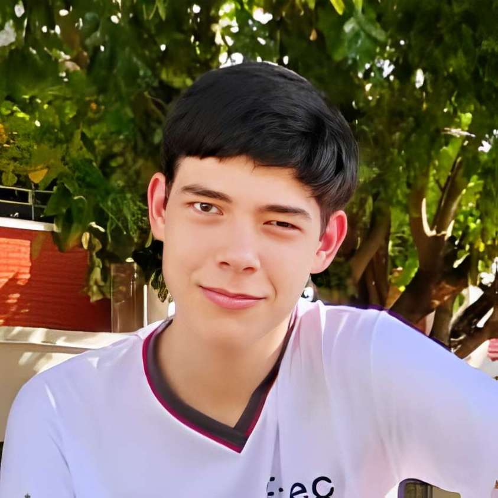
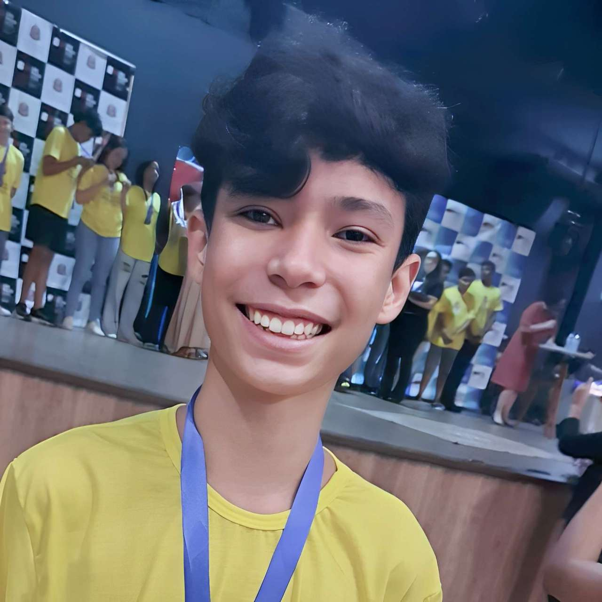

"Ao decorrer destes últimos meses de fruência do curso de capacitação técnica em Análise e Desenvolvimento de Sistemas (ADS) da instituição do Centro Paula Sousa, tive a oportunidade de criar uma perspectiva mais sólida das áreas da computacão, informática, programação, e desenvolvimento lógico de sistemas, por meio do apresentado em sala de aula, feição de atividades relacionadas ao conteúdo e aprofundamentos à parte em pesquisa. Até o momento, tenho trabalhado com linguagens de desenvolvimento web como HTML e CSS, e na parte lógica em construção de fluxogramas, linguagem G (semelhante a uma redução de portugol), e recentemente fui introduzido a linguagem de programação C++.
Venho procurando consolidar meu repertório de front-end (client-side) em desenvolvimento objetivo (lógica) e composição subjetiva (design), sendo esta última a que mais criei afeição em produção, a fim de expandir meu conjunto de habilidades pessoais (skills) e como profissional, que neste primeiro ano são mais trabalhadas nos componentes de PW (Programação Web) e TPA (Técnicas de Programação e Algoritmo). É igualmente pertinente relatar sobre a elaboração em back-end (server-side), que veio sendo exercida pela disciplina de TPA através da linguagem C++, uma extensão da linguagem C, que funciona numa construção de baixo nível e alta tipagem, assim, permitindo-me internalizar mais efetivamente a lógica algorítimica (que é um aspecto universal para qualquer linguagem de programação). Quanto a parte de Hardware, tem se mostrado uma matéria bem instigante, que contempla o funcionamento computacional teórico e prático, novamente com apresentação de aula e reforço em exercícios, dentro da disciplina de Fundamentos da Informática.
No que se diz respeito a minha vivência pessal como estudante, meu enfoque por este bimestre foi direcionado em maior peso a desenvolvimento web, que tenho buscado fomentar dedicando-me nas atividades em classe e agregando material externo ao meu repertório pessoal. Objetivo tornar-me um professional em criar soluções eficientes e disponíveis a usufruto das pessoas.
Num panorama geral, o curso tem sido uma experiência entusiasmante, justamente pela dinâmica de aprendizado em grupo, o que fomenta uma produção mais rica e direcionada, agregando conhecimentos e outras perspectivas da construção de gui e de interrelação lógica paralela." Haniel Patim - 1º ADS

"Durante esses dois primeiros meses de aula do curso de Análise e Desenvolvimento de Sistemas (ADS) da Etec, pude adquirir uma ampla base teórica em hardware e fundamentos da informática e prática em desenvolvimento de websites com utilização de HTML e CSS a partir de projetos reais redirecionados pelos professores do curso. Ao longo do curso, meu foco principal tem sido desenvolver meus conhecimentos em front-end usando os conceitos das aulas e de meus estudos individuais, sempre reforçando-os em minha mente a partir de projetos, sejam eles pessoais ou para o curso. A área de desenvolvimento de software é a que mais me chama atenção, especialmente os conceitos vistos nas aulas de Design Digital, que se estendem além do desenvolvimento web, sendo uma área vasta com muito potencial no mercado.
Em relação à experiência, tenho me esforçado em aplicar o que aprendo em projetos de desenvolvimento de sites práticos, buscando aplicar conceitos de programação web para torná-los funcionais e princípios de design para criar projetos responsivos e visualmente atraentes. Meu principal objetivo ao escolher este curso foi ser capaz de trabalhar com tecnologias de ponta e, ao mesmo tempo, construir soluções que sejam tanto eficientes quanto acessíveis para os usuários.
O feedback que recebo ao longo do curso tem sido fundamental para meu crescimento. As sugestões e observações de professores e colegas me ajudam a identificar pontos de melhoria, como o desenvolvimento de interfaces mais intuitivas e a ampliação do meu repertório de conceitos de programação.
Essas experiências se alinham diretamente com meus objetivos individuais: continuar aprimorando minhas habilidades técnicas, desenvolver projetos completos e, eventualmente, atuar como um profissional full-stack, com um forte foco no desenvolvimento de sistemas que atendam às necessidades dos usuários e que sejam escaláveis. Ao longo dessa jornada, que ainda tem muito para acontecer, espero me empenhar para dominar as tecnologias mais utilizadas no mercado, com foco na integração de sistemas e usabilidade.
Em resumo, o curso tem sido uma excelente base para o meu desenvolvimento profissional, proporcionando tanto o conhecimento técnico quanto a oportunidade de aplicar esse aprendizado de forma prática. Estou cada vez mais focado em me tornar um desenvolvedor completo, com uma sólida formação em desenvolvimento de sistemas e uma forte capacidade de colaborar em projetos de grande escala, sempre com o objetivo de inovar e entregar soluções de alto valor." - Vítor Gomes - 1º ADS